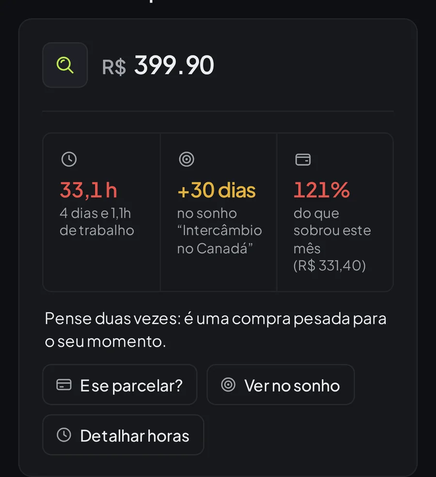
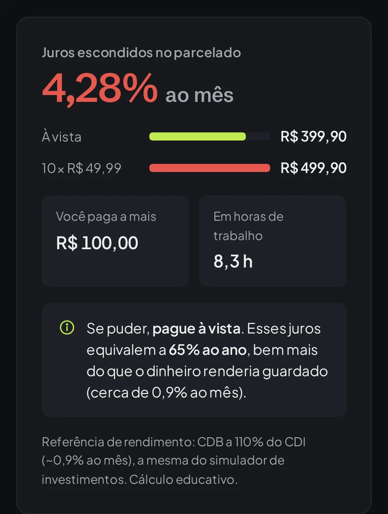
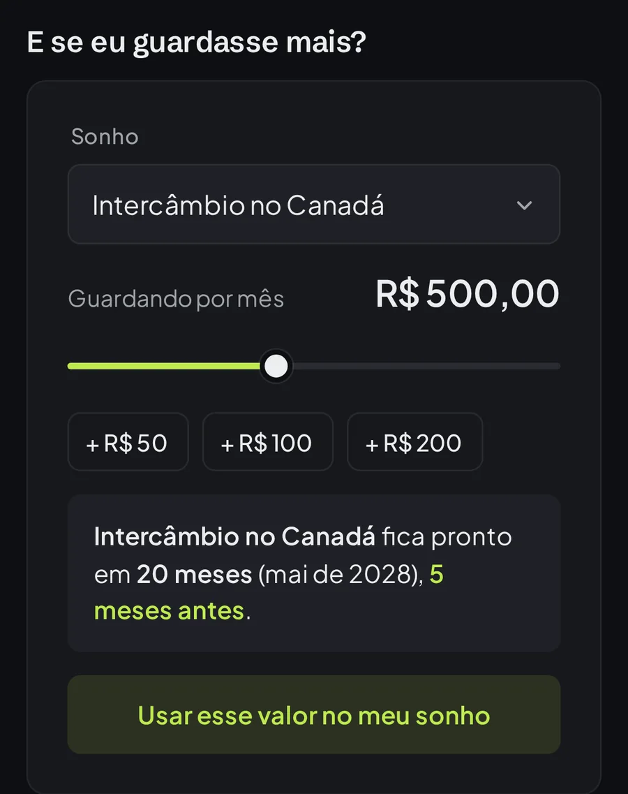
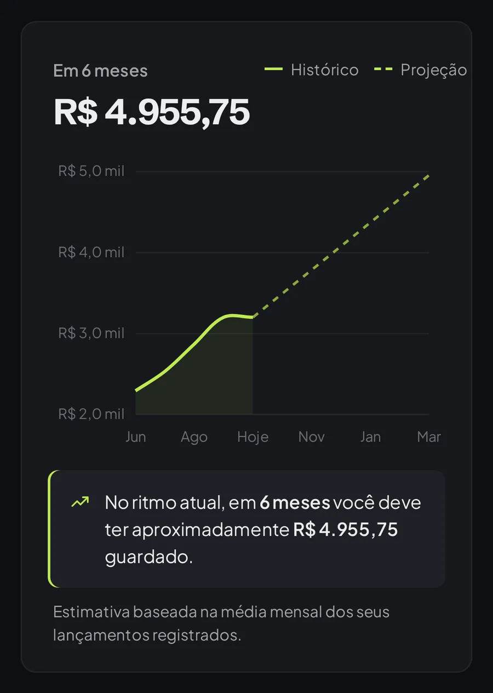

Digite um preço e veja o que ele custa de verdade
Um tênis de R$ 399,90 custa 33 horas de trabalho para a Ana, atrasa o intercâmbio dela em 30 dias e passa do que sobrou no mês. Isso aparece na tela inicial, antes de você decidir.

O Finlenz mostra quanto uma compra custa em horas de trabalho, quantos dias ela atrasa os seus sonhos e quanto de juros está escondido no parcelado. É grátis e você não precisa conectar o seu banco.
A demo abre com os dados da Ana, estagiária que ganha R$ 2.100 por mês e está juntando para um intercâmbio no Canadá.
No ano passado fomos ao MIT e a Harvard. Vimos de perto como as pessoas de lá pensam sobre dinheiro e voltamos querendo levar isso para a prática aqui.
Por isso o Finlenz foi pensado para o momento da compra, quando o produto ainda está no carrinho e dá para mudar de ideia. Entender seus hábitos hoje é o que paga os seus sonhos depois.
Caetano Pieralisi e equipe
Um tênis de R$ 399,90 custa 33 horas de trabalho para a Ana, atrasa o intercâmbio dela em 30 dias e passa do que sobrou no mês. Isso aparece na tela inicial, antes de você decidir.

Dez vezes de R$ 49,99 parece quase o mesmo que R$ 399,90 à vista. Não é: dá 4,28% ao mês, ou 65% ao ano. Você informa o preço e o valor da parcela, e o Finlenz calcula o resto.

Cadastre o que você quer conquistar e quanto guarda por mês. Quando a Ana arrasta o controle e guarda R$ 100 a mais, o intercâmbio chega cinco meses antes.

A previsão projeta o seu saldo para os próximos seis meses com base no que entra e sai. Na mentoria você pergunta do seu jeito, e a resposta leva em conta os seus lançamentos e sonhos.

As partes conversam entre si: o que você lança aparece na lente, nos sonhos e na previsão.
Crie a conta com o seu e-mail, o que leva menos de um minuto. Depois informe a sua renda, lance os gastos do mês e cadastre um sonho. A partir daí a lente, a previsão e os insights já funcionam com os seus números.
O Finlenz não pede acesso ao seu banco. Você lança tudo à mão, e isso por si só já ajuda a perceber para onde o dinheiro vai. Se quiser olhar antes de criar conta, a demo mostra o app com os dados da Ana e volta ao estado original a cada acesso.
Sim. Todas as ferramentas, a trilha e a mentoria são gratuitas.
Não. Você registra seus lançamentos manualmente, o que também ajuda a criar consciência sobre cada gasto.
Não. Cada conta só consegue ler e alterar os próprios lançamentos, sonhos e progresso.
É uma conta de exemplo, com os dados da Ana, uma estagiária, para você conhecer o app sem cadastro. Ela volta ao estado original a cada acesso.
Sim. O Finlenz roda no navegador do celular e do computador, sem precisar instalar nada.
Não. O simulador é educativo: compara opções com taxas médias de referência para você entender como cada uma funciona.
A conta demo não precisa de cadastro e volta ao estado original a cada acesso.